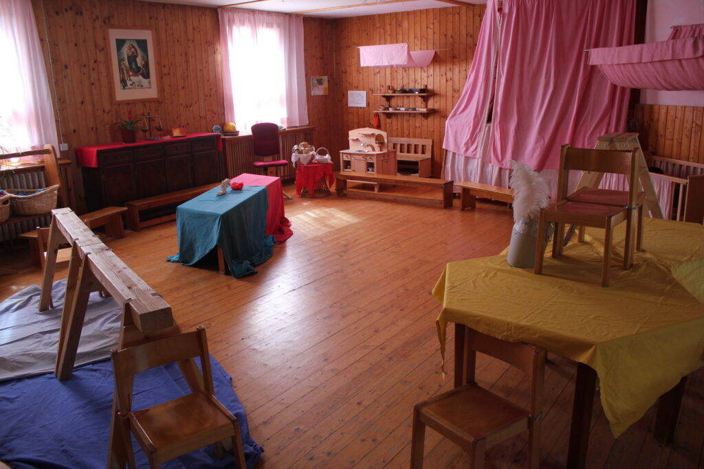
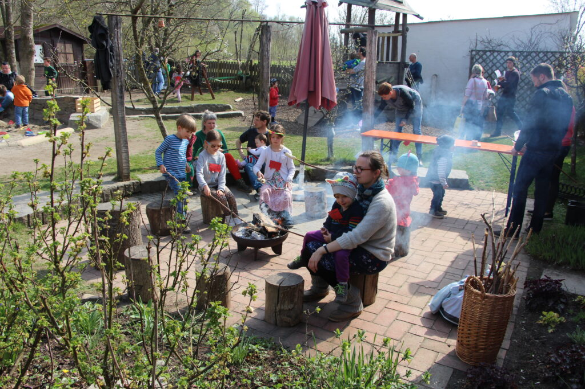

Über uns
Seit 1985 ein Ort, an dem das Kind im Mittelpunkt steht – getragen von Eltern, gestaltet von einem engagierten Team.

Unsere Geschichte
- 1979Eltern aus dem Schussental gründen gemeinsam mit weiteren Interessierten den Arbeitskreis Waldorfpädagogik.
- 1982Aus dem Arbeitskreis geht der Förderverein Waldorfpädagogik e.V. hervor.
- 1984Eine Waldorf-Spielgruppe startet in Privaträumen. Der Verein erwirbt ein Grundstück mit einer ehemaligen Arbeiterbaracke und baut sie in Eigenleistung um.
- 1985Gründungsjahr des Waldorfkindergartens Baindt – seitdem ein Ort, an dem das Kind im Mittelpunkt steht.
Pädagogik
Die Waldorfpädagogik basiert auf dem Menschenbild Rudolf Steiners und sieht in jedem Kind eine unantastbare Individualität. Uns ist es ein Grundanliegen, den Kindern einen gesunden und geschützten Lebensraum zu schaffen, in dem sie sich frei entfalten können.
Dafür braucht das Kind kompetente Vorbilder, liebevolle und stabile Beziehungen, verlässlich wiederkehrende Abläufe und Erwachsene, die sinnvoll tätig sind. Unsere Konzeption verbindet die Waldorfpädagogik mit dem Orientierungsplan des Landes Baden-Württemberg.
Unsere ausführliche Konzeption liegt im Kindergarten zum Lesen und Ausleihen aus.

Rhythmus & Wiederholung
Tages-, Wochen- und Jahresläufe geben Sicherheit und Orientierung.
Vorbild & Nachahmung
Kinder lernen an Erwachsenen, die mit Hingabe und Sinn tätig sind.
Sinnhaftigkeit & Handhabbarkeit
Was die Kinder erleben, ist für sie durchschaubar und greifbar.
Team
Bei uns arbeiten Fachkräfte mit unterschiedlichen Ausbildungen: Waldorferzieher:innen, staatlich anerkannte Erzieher:innen, Kinderpfleger:innen, Heilerziehungspfleger:innen mit pädagogischer Zusatzausbildung und Elementarpädagog:innen. Unterstützt werden sie von Auszubildenden, FSJler:innen und Praktikant:innen.
- Vormittags arbeiten in jeder Gruppe konstante Teams von meist drei Mitarbeitenden – für sichere, stabile Beziehungen.
- Wir achten auf eine Mischung aus Ausbildung, Berufserfahrung und Alter.
- Fort- und Weiterbildungen sind ausdrücklich erwünscht und fest in der Jahresplanung verankert.Im Ganztagesangebot sind je nach Kinderzahl bis zu zwei Mitarbeitende in der Gruppe.

Unsere Eltern sind der Kindergarten.
Wir verstehen die Zusammenarbeit mit den Eltern als Erziehungspartnerschaft zum Wohl des Kindes – mit Vertrauen, Austausch und dem Mut, auch mal unterschiedlicher Meinung zu sein.
- Elternabende etwa fünf- bis sechsmal im Jahr
- Mindestens ein ausführliches Entwicklungsgespräch pro Jahr, dazu kurze Gespräche beim Abholen
- Ein jährlich gewählter Elternbeirat als Bindeglied zwischen Eltern, Team und Vorstand
- Mithilfe bei Festen, in Haus, Hof und Garten
Der Verein
Träger des Kindergartens ist der Förderverein Waldorfpädagogik e.V. Eltern, deren Kinder bei uns betreut werden, sind Mitglied. Darüber hinaus kann jede und jeder Mitglied werden, die oder der sich für Waldorfpädagogik interessiert – als förderndes oder als ordentliches, stimmberechtigtes Mitglied.
Kindergartenleitung, pädagogisches Team und Vorstand teilen sich in Selbstverwaltung alle Aufgaben, die über die Betreuung hinaus anfallen.
Mitglied werdenDer Vorstand
Drei bis sieben Personen, gewählt von der Mitgliederversammlung für zwei Jahre.
- Finanzen: A. Bentele, T. Stemmer
- Personal: A. Tanner, O. Reuther, W. Krebs
- Haus, Hof & Garten: M. Maasz